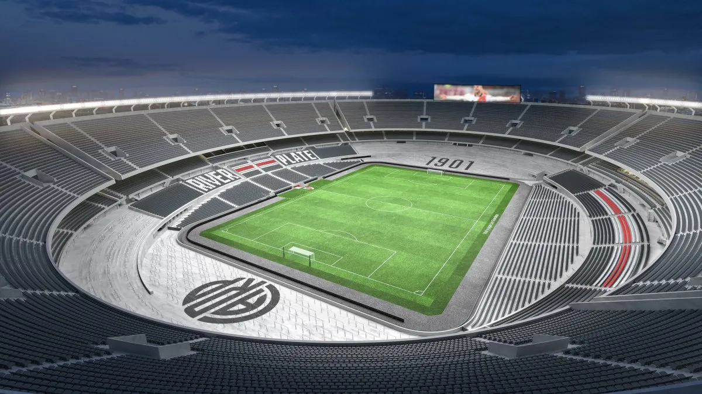
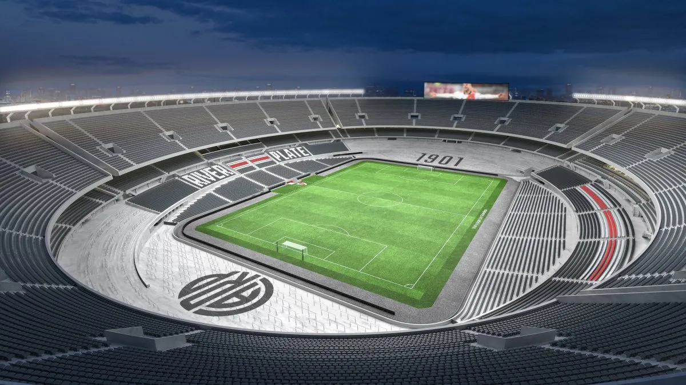

HISTORIA DE RIVER
Fundación: 1901, barrio de La Boca (luego mudado a Núñez).
Apodo: El Millonario, La Banda.
Palmarés destacado:
38 Ligas de Primera División (récord en Argentina)
4 Copas Libertadores
1 Copa Intercontinental
1 Copa Sudamericana
PRÓXIMOS PARTIDOS
| Día |
L/V |
vs Equipo |
Hora |
| 25/06 |
V |
Inter |
22:00 |
| 13/07 |
L |
Platense |
14:00 |
| 20/07 |
V |
Instituto |
14:00 |
| 27/07 |
L |
San Lorenzo |
14:00 |
| 30/07 |
V |
San Martín (T) |
12:00 |
PLANTEL
| Jugador |
Edad |
Nacimiento |
Altura |
| Marcelo Gallardo (Entrenador) |
49 |
18/01/1976 |
1.69 |
| ARQUEROS |
| Franco Armani |
38 |
16/10/1986 |
1.89 |
| Jeremias Ledesma |
32 |
13/02/1993 |
1.86 |
| Lucas Lavagnino |
20 |
22/08/2004 |
1.90 |
| Santiago Beltrán |
20 |
04/10/2004 |
1.89 |
| DEFENSORES |
| Federico Gattoni | 26 | 16/02/1999 | 1.83 |
| Gonzalo Montiel | 28 | 01/01/1997 | 1.75 |
| German Pezzella | 33 | 27/06/1991 | 1.87 |
| Lautaro Rivero | 21 | 01/11/2003 | 1.85 |
| Leandro González Pirez | 33 | 26/02/1992 | 1.86 |
| Fabricio Bustos | 29 | 28/04/1996 | 1.67 |
| Paulo Díaz | 30 | 25/08/1994 | 1.80 |
| Milton Casco | 37 | 11/04/1988 | 1.70 |
| Marcos Acuña | 33 | 28/10/1991 | 1.72 |
| Lucas Martínez Quarta | 29 | 10/05/1996 | 1.83 |
| MEDIOCAMPISTAS |
| Matías Kranevitter | 32 | 21/05/1993 | 1.78 |
| Maximiliano Meza | 32 | 15/12/1992 | 1.81 |
| Manuel Lanzini | 32 | 15/02/1993 | 1.67 |
| Gonzalo Martínez | 32 | 13/06/1993 | 1.72 |
| Kevin Castaño | 24 | 29/09/2000 | 1.77 |
| Enzo Pérez | 39 | 22/02/1986 | 1.78 |
| Nacho Fernández | 35 | 12/01/1990 | 1.82 |
| Rodrigo Aliendro | 34 | 16/02/1991 | 1.78 |
| Franco Mastantuono | 17 | 14/08/2007 | 1.80 |
| Santiago Simón | 23 | 13/06/2002 | 1.78 |
| Giuliano Galoppo | 26 | 18/06/1999 | 1.79 |
| Giorgio Costantini | 19 | 16/04/2006 | 1.85 |
| Santiago Lencina | 19 | 04/09/2005 | 1.73 |
| DELANTEROS |
| Matías Rojas | 29 | 03/11/1995 | 1.86 |
| Miguel Borja | 32 | 26/01/1993 | 1.83 |
| Facundo Colidio | 25 | 04/01/2000 | 1.75 |
| Sebastián Driussi | 29 | 09/02/1996 | 1.79 |
| Gonzalo Tapia | 23 | 18/02/2002 | 1.78 |
| Bautista Dadín | 19 | 20/05/2006 | 1.75 |
| Ian Subiabre | 18 | 01/01/2007 | 1.72 |

 
